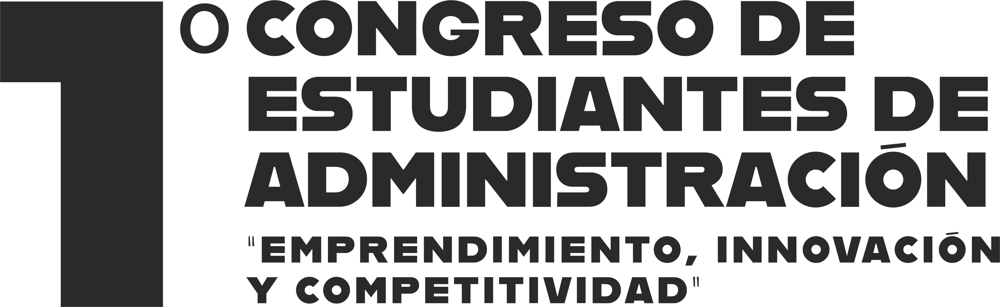

UNIVERSIDAD AUTÓNOMA DEL ESTADO DE HIDALGO

FECHAS29 — 30octubre 2026
SEDEICEASan Agustín Tlaxiaca, Hidalgo
Un espacio para compartir investigación, experiencias e ideas que transforman la Administración.
Explorar programaEMPRENDIMIENTO · INNOVACIÓN · COMPETITIVIDAD

29 / 30 OCTUBRE 2026
Conferencias y foroPonenciasCarteles científicosTalleres
29 Y 30 DE OCTUBRE · 2026
Programa del Congreso.
Encuentra actividades, ponencias, carteles y talleres por fecha, tema, mesa o participante. Toda la información se consulta aquí, sin descargar documentos.
ORGANIZA TU VISITA
Mi Agenda
Guarda las actividades que te interesan. Tu selección permanece en este navegador.
NOS VEMOS EN EL ICEA
La sede del encuentro.
Instituto de Ciencias Económico Administrativas, Universidad Autónoma del Estado de Hidalgo.
Circuito La Concepción, Km 2.5, Col. San Juan Tilcuautla, San Agustín Tlaxiaca, Hidalgo, México.
Los espacios específicos de cada actividad aparecen en el programa.
INFORMACIÓN PARA PARTICIPANTES
Constancias
Este apartado se habilitará cuando se proporcione la información oficial de consulta o descarga.